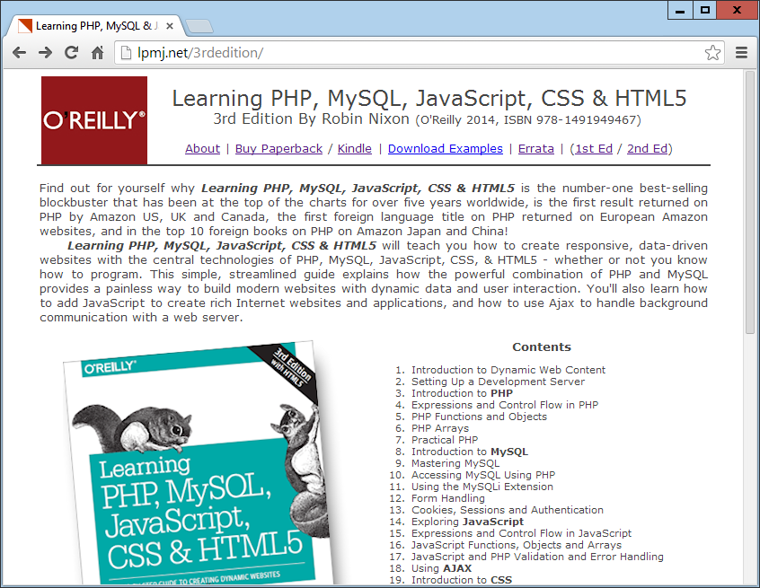
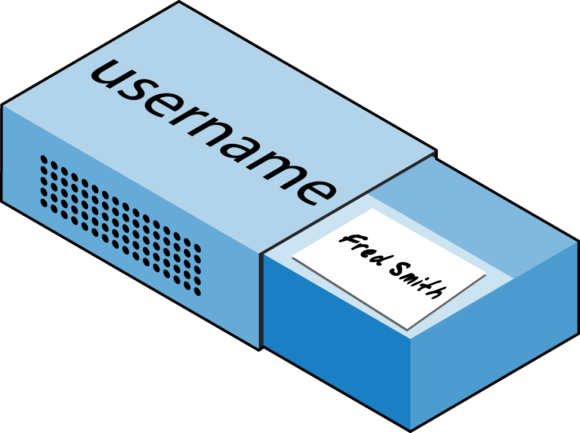

Introduction to PHP
In
Chapter 1
, I explained that PHP is the language that you use to make the server
generate dynamic output—output that is potentially different each time a browser
requests a page. In this chapter, you’ll start learning this simple but powerful lan‐
guage; it will be the topic of the following chapters up through
Chapter 7
.
I encourage you to develop your PHP code in one of the IDEs listed in
Chapter 2
. It
will help you catch typos and speed up learning tremendously in comparison to less
feature-rich editors.
Many of these development environments let you run the PHP code and see the out‐
put discussed in this chapter. I’ll also show you how to embed the PHP in an HTML
file so that you can see what the output looks like in a web page (the way your users
will ultimately see it). But that step, as thrilling as it may be at first, isn’t really impor
tant at this stage.
In production, your web pages will be a combination of PHP, HTML, and JavaScript,
and some MySQL statements laid out using CSS, and possibly utilizing various
HTML5 elements. Furthermore, each page can lead to other pages to provide users
with ways to click through links and fill out forms. We can avoid all that complexity
while learning each language, though. Focus for now on just writing PHP code and
making sure that you get the output you expect—or at least that you understand the
output you actually get!
Incorporating PHP Within HTML
By default, PHP documents end with the extension
.php
. When a web server encoun
ters this extension in a requested file, it automatically passes it to the PHP processor.
Of course, web servers are highly configurable, and some web developers choose to
force files ending with
.htm
or
.html
to also get parsed by the PHP processor, usually
because they want to hide the fact that they are using PHP.
Your PHP program is responsible for passing back a clean file suitable for display in a
web browser. At its very simplest, a PHP document will output only HTML. To prove
this, you can take any normal HTML document such as an
index.html
file and save it
as
index.php
, and it will display identically to the original.
To trigger the PHP commands, you need to learn a new tag. Here is the first part:
<?php
The first thing you may notice is that the tag has not been closed. This is because
entire sections of PHP can be placed inside this tag, and they finish only when the
closing part is encountered, which looks like this:
?>
A small PHP “Hello World” program might look like
Example 3-1
.
Example 3-1. Invoking PHP
<?php
echo "Hello world";
?>
The way you use this tag is quite flexible. Some programmers open the tag at the start
of a document and close it right at the end, outputting any HTML directly from PHP
commands. Others, however, choose to insert only the smallest possible fragments of
PHP within these tags wherever dynamic scripting is required, leaving the rest of the
document in standard HTML.
The latter type of programmer generally argues that their style of coding results in
faster code, while the former say that the speed increase is so minimal that it doesn’t
justify the additional complexity of dropping in and out of PHP many times in a sin
gle document.
As you learn more, you will surely discover your preferred style of PHP development,
but for the sake of making the examples in this book easier to follow, I have adopted
the approach of keeping the number of transfers between PHP and HTML to a mini
mum—generally only once or twice in a document.
By the way, there is a slight variation to the PHP syntax. If you browse the Internet for
PHP examples, you may also encounter code where the opening and closing syntax
looks like this:
<?
echo "Hello world";
?>
Although it’s not as obvious that the PHP parser is being called, this is a valid, alter
native syntax that also usually works, but should be discouraged, as it is incompatible
with XML and its use is now deprecated (meaning that it is no longer recommended
and could be removed in future versions).
If you have only PHP code in a file, you may omit the closing
?>
.
This can be a good practice, as it will ensure that you have no
excess whitespace leaking from your PHP files (especially impor
tant when you’re writing object-oriented code).
This Book’s Examples
To save you the time it would take to type them all in, all the examples from this book
have been archived onto the website at
http://lpmj.net
, which you can download to
your computer by clicking the Download Examples link in the heading section (see
Figure 3-1
).

Figure 3-1. Viewing examples from this book at
http://lpmj.net
As well as having all the examples saved by chapter and example number (such as
example3-1.php
), the provided archive also contains an additional directory called
named_examples
, in which you’ll find all the examples I suggest you save using a spe
cific
filename
(such
as
the
upcoming
Example
3-4
,
which
should
be
saved
as
test1.php
).
The Structure of PHP
We’re going to cover quite a lot of ground in this section. It’s not too difficult, but I
recommend that you work your way through it carefully, as it sets the foundation for
everything else in this book. As always, there are some useful questions at the end of
the chapter that you can use to test how much you’ve learned.
Using Comments
There are two ways in which you can add comments to your PHP code. The first
turns a single line into a comment by preceding it with a pair of forward slashes:
// This is a comment
This version of the comment feature is a great way to temporarily remove a line of
code from a program that is giving you errors. For example, you could use such a
comment to hide a debugging line of code until you need it, like this:
// echo "X equals $x";
You can also use this type of comment directly after a line of code to describe its
action, like this:
$x += 10; // Increment $x by 10
When you need multiple-line comments, there’s a second type of comment, which
looks like
Example 3-2
.
Example 3-2. A multiline comment
<?php
/* This is a section
of multiline comments
which will not be
interpreted */
?>
You can use the
/*
and
*/
pairs of characters to open and close comments almost
anywhere you like inside your code. Most, if not all, programmers use this construct
to temporarily comment out entire sections of code that do not work or that, for one
reason or another, they do not wish to be interpreted.
A common error is to use
/*
and
*/
to comment out a large section
of code that already contains a commented-out section that uses
those characters. You can’t nest comments this way; the PHP inter
preter won’t know where a comment ends and will display an error
message. However, if you use a program editor or IDE with syntax
highlighting, this type of error is easier to spot.
Basic Syntax
PHP is quite a simple language with roots in C and Perl, yet it looks more like Java. It
is also very flexible, but there are a few rules that you need to learn about its syntax
and structure.
Semicolons
You may have noticed in the previous examples that the PHP commands ended with
a semicolon, like this:
$x += 10;
Probably the most common cause of errors you will encounter with PHP is forgetting
this semicolon. This causes PHP to treat multiple statements like one statement,
which it is unable to understand, prompting it to produce a
Parse error
message.
The $ symbol
The
$
symbol has come to be used in many different ways by different programming
languages. For example, if you have ever written in the BASIC language, you will have
used the
$
to terminate variable names to denote them as strings.
In PHP, however, you must place a
$
in front of
all
variables. This is required to make
the PHP parser faster, as it instantly knows whenever it comes across a variable.
Whether your variables are numbers, strings, or arrays, they should all look some‐
thing like those in
Example 3-3
.
Example 3-3.
Three different types of variable assignment
<?php
$mycounter = 1;
$mystring = "Hello";
$myarray = array("One", "Two", "Three");
?>
And really that’s pretty much all the syntax that you have to remember. Unlike lan
guages such as Python, which are very strict about how you indent and lay out our
code, PHP leaves you completely free to use (or not use) all the indenting and spacing
you like. In fact, sensible use of
whitespace
is generally encouraged (along with com
prehensive commenting) to help you understand your code when you come back to
it. It also helps other programmers when they have to maintain your code.
Variables
There’s a simple metaphor that will help you understand what PHP variables are all
about. Just think of them as little (or big) matchboxes! That’s right—matchboxes that
you’ve painted over and written names on.
String variables
Imagine you have a matchbox on which you have written the word
username
. You
then write
Fred Smith
on a piece of paper and place it into the box (see
Figure 3-2
).
Well, that’s the same process as assigning a string value to a variable, like this:
$username = "Fred Smith";

Figure 3-2. You can think of variables as matchboxes containing items
The quotation marks indicate that “Fred Smith” is a
string
of characters. You must
enclose
each
string
in
either
quotation
marks
or
apostrophes
(single
quotes),
although there is a subtle difference between the two types of quote, which is
explained later. When you want to see what’s in the box, you open it, take the piece of
paper out, and read it. In PHP, doing so looks like this:
echo $username;
Or you can assign it to another variable (photocopy the paper and place the copy in
another matchbox), like this:
$current_user = $username;
If you are keen to start trying out PHP for yourself, you could enter the examples in
this chapter into an IDE (as recommended at the end of
Chapter 2
) to see instant
results, or you could enter the code in
Example 3-4
into a program editor and save it
to your server’s document root directory (also discussed in
Chapter 2
) as
test1.php
.
Example 3-4. Your
first PHP program
<?php // test1.php
$username = "Fred Smith";
echo $username;
echo "<br>";
$current_user = $username;
echo $current_user;
?>
Now you can call it up by entering the following into your browser’s address bar:
http://localhost/test1.php
If during installation of your web server (as detailed in
Chapter 2
)
you changed the port assigned to the server to anything other than
80, then you must place that port number within the URL in this
and all other examples in this book. So, for example, if you changed
the port to 8080, the preceding URL becomes this:
http://localhost:8080/test1.php
I won’t mention this again, so just remember to use the port num‐
ber if required when trying examples or writing your own code.
The result of running this code should be two occurrences of the name
Fred Smith
,
the first of which is the result of the
echo $username
command, and the second of
the
echo $current_user
command.
Numeric variables
Variables don’t contain just strings—they can contain numbers too. If we return to
the matchbox analogy, to store the number 17 in the variable
$count
, the equivalent
would be placing, say, 17 beads in a matchbox on which you have written the word
count
:
$count = 17;
You could also use a floating-point number (containing a decimal point); the syntax is
the same:
$count = 17.5;
To read the contents of the matchbox, you would simply open it and count the beads.
In PHP, you would assign the value of
$count
to another variable or perhaps just echo
it to the web browser.
Arrays
So what are arrays? Well, you can think of them as several matchboxes glued together.
For example, let’s say we want to store the player names for a five-person soccer team
in an array called
$team
. To do this, we could glue five matchboxes side by side and
write down the names of all the players on separate pieces of paper, placing one in
each matchbox.
Across the whole top of the matchbox assembly we would write the word
team
(see
Figure 3-3
). The equivalent of this in PHP would be the following:
$team = array('Bill', 'Mary', 'Mike', 'Chris', 'Anne');
This syntax is more complicated than the ones I’ve explained so far. The array-
building code consists of the following construct:
array();
with five strings inside. Each string is enclosed in apostrophes.
If we then wanted to know who player 4 is, we could use this command:
echo $team[3]; // Displays the name Chris
Figure 3-3. An array is like several matchboxes glued together
The reason the previous statement has the number 3, not 4, is because the first ele‐
ment of a PHP array is actually the zeroth element, so the player numbers will there‐
fore be 0 through 4.
Two-dimensional arrays
There’s a lot more you can do with arrays. For example, instead of being single
dimensional lines of matchboxes, they can be two-dimensional matrixes or can even
have three or more dimensions.
As an example of a two-dimensional array, let’s say we want to keep track of a game of
tic-tac-toe, which requires a data structure of nine cells arranged in a 3×3 square. To
represent this with matchboxes, imagine nine of them glued to each other in a matrix
of three rows by three columns (see
Figure 3-4
).
Figure 3-4. A multidimensional array simulated with matchboxes
You can now place a piece of paper with either an
x
or an
o
in the correct matchbox
for each move played. To do this in PHP code, you have to set up an array containing
three more arrays, as in
Example 3-5
, in which the array is set up with a game already
in progress.
Example 3-5.
Defining a two-dimensional array
<?php
$oxo = array(
array('x', ' ', 'o'),
array('o', 'o', 'x'),
array('x', 'o', ' ')
);
?>
Once again, we’ve moved up a step in complexity, but it’s easy to understand if you
grasp the basic array syntax. There are three
array()
constructs nested inside the
outer
array()
construct.
To then return the third element in the second row of this array, you would use the
following PHP command, which will display an
x
:
echo $oxo[1][2];
Remember
that
array
indexes
(pointers
at
elements
within
an
array) start from zero, not one, so the
[1]
in the previous com‐
mand refers to the second of the three arrays, and the
[2]
refer‐
ences the third position within that array. It will return the contents
of the matchbox three along and two down.
As mentioned, we can support arrays with even more dimensions by simply creating
more arrays within arrays. However, we will not be covering arrays of more than two
dimensions in this book.
And don’t worry if you’re still having difficulty coming to grips with using arrays, as
the subject is explained in detail in
Chapter 6
.
Variable-naming rules
When creating PHP variables, you must follow these four rules:
•
Variable names must start with a letter of the alphabet or the
_
(underscore)
character.
•
Variable names can contain only the characters
a-z
,
A-Z
,
0-9
, and
_
(underscore).
•
Variable names may not contain spaces. If a variable must comprise more than
one
word,
it
should
be
separated
with
the
_
(
underscore
)
character
(e.g.,
$user_name
).
•
Variable names are case-sensitive. The variable
$High_Score
is not the same as
the variable
$high_score
.
To allow extended ASCII characters that include accents, PHP also
supports the bytes from 127 through 255 in variable names. But
unless your code will be maintained only by programmers who are
used to those characters, it’s probably best to avoid them, because
programmers using English keyboards will have difficulty access‐
ing them.
Operators
Operators
are the mathematical, string, comparison, and logical commands such as
plus, minus, multiply, and divide. PHP looks a lot like plain arithmetic; for instance,
the following statement outputs 8:
echo 6 + 2;
Before moving on to learn what PHP can do for you, take a moment to learn about
the various operators it provides.
Arithmetic operators
Arithmetic operators do what you would expect. They are used to perform mathe‐
matics. You can use them for the main four operations (plus, minus, times, and
divide) as well as to find a modulus (the remainder after a division) and to increment
or decrement a value (see
Table 3-1
).
Table 3-1. Arithmetic operators
| Operator |
Description |
Example |
| + |
Additiontdspan>
| $j+1 |
| - |
Subtraction |
$j-6 |
| * |
Multiplication |
$j*1 |
| / |
Division |
$j/4 |
| % |
Modulus (division remainder) |
$j%9 |
| ++ |
Increment |
++$j |
| -- |
Decrement |
--$j |
Assignment operators
These operators are used to assign values to variables. They start with the very simple
=
and move on to
+=
,
-=
, and so on (see
Table 3-2
). The operator
+=
adds the value on
the right side to the variable on the left, instead of totally replacing the value on the
left. Thus, if
$count
starts with the value
5
, the statement
$count += 1;
sets
$count
to 6, just like the more familiar assignment statement:
$count = $count + 1;
Strings have their own operator, the period (
.
), detailed in the section
“String concat‐
enation” on page 49
.
Table 3-2. Assignment operators
| Operator |
Example |
Equivalent to |
| = |
$j=15 |
$j = 15 |
| += |
$j+=5 |
$j = $j + 5 |
| -= |
$j-=3 |
$j = $j - 3 |
| *= |
$j*=8 |
$j = $j * 8 |
| /= |
$j/=16 |
$j = $j / 16 |
| .= |
$j.=$k |
$j = $j . $k |
| %= |
$j%=4 |
$j = $j % 4 |
Comparison operators
Comparison operators are generally used inside a construct such as an
if
statement
in which you need to compare two items. For example, you may wish to know
whether a variable you have been incrementing has reached a specific value, or
whether another variable is less than a set value, and so on (see
Table 3-3
).
Note the difference between
=
and
==
. The first is an assignment operator, and the
second is a comparison operator. Even more-advanced programmers can sometimes
transpose the two when coding hurriedly, so be careful.
Table 3-3. Comparison operators
| Operator |
Description |
Example |
| == |
Is equal to |
$j == 4 |
| != |
Is not equal to |
$j != 21 |
| > |
Is greater than |
$j > 3 |
| < |
Is less than |
$j < 100 |
| >= |
Is greater than or equal to |
$j >= 15 |
| <= |
Is less than or equal to |
$j <= 8 |
Logical operators
If you haven’t used them before, logical operators may at first seem a little daunting.
But just think of them the way you would use logic in English. For example, you
might say to yourself, “If the time is later than 12 p.m. and earlier than 2 p.m., then
have lunch.” In PHP, the code for this might look something like the following (using
military timing):
if ($hour > 12 && $hour < 14) dolunch();
Here we have moved the set of instructions for actually going to lunch into a function
that we will have to create later called
dolunch
. The
then
of the statement is left out,
because it is implied and therefore unnecessary.
As the previous example shows, you generally use a logical operator to combine the
results of two of the comparison operators shown in the previous section. A logical
operator can also be input to another logical operator: “If the time is later than 12
p.m. and earlier than 2 p.m., or if the smell of a roast is permeating the hallway and
there are plates on the table.” As a rule, if something has a
TRUE
or
FALSE
value, it can
be input to a logical operator. A logical operator takes two true-or-false inputs and
produces a true-or-false result.
Table 3-4
shows the logical operators.
Table 3-4. Logical operators
| Operator |
Description |
Example |
| && |
And |
$j == 3 && $k == 2 |
| and |
Low-precedence and |
$j == 3 and $k == 2 |
| || |
Or |
$j < 5 || $j > 10 |
| or |
Low-precedence or |
$j < 5 or $j > 10 |
| ! |
Not |
! ($j == $k) |
| xor |
Exclusive or |
$j xor$k |
Note that
&&
is usually interchangeable with
and
; the same is true for
||
and
or
. But
and
and
or
have a lower precedence, so in some cases, you may need extra parenthe‐
ses to force the required precedence. On the other hand, there are times when
only
and
or
or
are acceptable, as in the following statement, which uses an
or
operator:
$html = file_get_contents($site)
or
die("Cannot download from $site");
The most unusual of these operators is
xor
, which stands for
exclusive or
and returns
a
TRUE
value if either value is
TRUE
, but a
FALSE
value if both inputs are
TRUE
or both
inputs are
FALSE
. To understand this, imagine that you want to concoct your own
cleaner for household items. Ammonia makes a good cleaner, and so does bleach, so
you want your cleaner to have one of these. But the cleaner must not have both,
because the combination is hazardous. In PHP, you could represent this as follows:
$ingredient = $ammonia xor $bleach;
In the example, if either
$ammonia
or
$bleach
is
TRUE
,
$ingredient
will also be set to
TRUE
. But if both are
TRUE
or both are
FALSE
,
$ingredient
will be set to
FALSE
.
Variable Assignment
The syntax to assign a value to a variable is always
variable = value
. Or, to reassign the
value to another variable, it is
other variable = variable
.
There are also a couple of other assignment operators that you will find useful. For
example, we’ve already seen
$x += 10;
which tells the PHP parser to add the value on the right (in this instance, the value
10
) to the variable
$x
. Likewise, we could subtract as follows:
$y -= 10;
Variable incrementing and decrementing
Adding or subtracting 1 is such a common operation that PHP provides special oper
ators for it. You can use one of the following in place of the
+=
and
-=
operators:
++$x;
--$y;
In conjunction with a test (an
if
statement), you could use the following code:
if (++$x == 10) echo $x;
This tells PHP to
first
increment the value of
$x
and then test whether it has the value
10
; if it does, output its value. But you can also require PHP to increment (or, in the
following example, decrement) a variable
after
it has tested the value, like this:
if ($y-- == 0) echo $y;
which gives a subtly different result. Suppose
$y
starts out as
0
before the statement is
executed. The comparison will return a
TRUE
result, but
$y
will be set to
–
1
after the
comparison is made. So what will the
echo
statement display:
0
or
–
1
? Try to guess,
and then try out the statement in a PHP processor to confirm. Because this combina‐
tion of statements is confusing, it should be taken as just an educational example and
not as a guide to good programming style.
In short, whether a variable is incremented or decremented before or after testing
depends on whether the increment or decrement operator is placed before or after
the variable.
By the way, the correct answer to the previous question is that the
echo
statement will
display the result
–
1
, because
$y
was decremented right after it was accessed in the
if
statement, and before the
echo
statement.
String concatenation
String concatenation uses the period (
.
) to append one string of characters to
another. The simplest way to do this is as follows:
echo "You have " . $msgs . " messages.";
Assuming that the variable
$msgs
is set to the value
5
, the output from this line of
code will be the following:
You have 5 messages.
Just as you can add a value to a numeric variable with the
+=
operator, you can
append one string to another using
.=
, like this:
$bulletin .= $newsflash;
In this case, if
$bulletin
contains a news bulletin and
$newsflash
has a news flash,
the command appends the news flash to the news bulletin so that
$bulletin
now
comprises both strings of text.
String types
PHP supports two types of strings that are denoted by the type of quotation mark
that you use. If you wish to assign a literal string, preserving the exact contents, you
should use the single quotation mark (apostrophe), like this:
$info = 'Preface variables with a $ like this: $variable';
In this case, every character within the single-quoted string is assigned to
$info
. If
you had used double quotes, PHP would have attempted to evaluate
$variable
as a
variable.
On the other hand, when you want to include the value of a variable inside a string,
you do so by using double-quoted strings:
echo "This week $count people have viewed your profile";
As you will realize, this syntax also offers a simpler form of concatenation in which
you don’t need to use a period, or close and reopen quotes, to append one string to
another. This is called
variable substitution
, and you will notice some applications
using it extensively and others not using it at all.
Escaping characters
Sometimes a string needs to contain characters with special meanings that might be
interpreted incorrectly. For example, the following line of code will not work, because
the second quotation mark encountered in the word
spelling’s
will tell the PHP parser
that the string end has been reached. Consequently, the rest of the line will be rejected
as an error:
$text = 'My spelling's atroshus'; // Erroneous syntax
To correct this, you can add a backslash directly before the offending quotation mark
to tell PHP to treat the character literally and not to interpret it:
$text = 'My spelling\'s still atroshus';
And you can perform this trick in almost all situations in which PHP would other‐
wise return an error by trying to interpret a character. For example, the following
double-quoted string will be correctly assigned:
$text = "She wrote upon it, \"Return to sender\".";
Additionally, you can use escape characters to insert various special characters into
strings such as tabs, newlines, and carriage returns. These are represented, as you
might guess, by
\t
,
\n
, and
\r
. Here is an example using tabs to lay out a heading; it
is included here merely to illustrate escapes, because in web pages there are always
better ways to do layout:
$heading = "Date\tName\tPayment";
These special backslash-preceded characters work only in double-quoted strings. In
single-quoted strings, the preceding string would be displayed with the ugly
\t
sequences instead of tabs. Within single-quoted strings, only the escaped apostrophe
(
\'
) and escaped backslash itself (
\\
) are recognized as escaped characters.
Multiple-Line Commands
There are times when you need to output quite a lot of text from PHP, and using sev‐
eral
echo
(or
print
) statements would be time-consuming and messy. To overcome
this, PHP offers two conveniences. The first is just to put multiple lines between
quotes, as in
Example 3-6
. Variables can also be assigned, as in
Example 3-7
.
Example 3-6. A multiline string echo statement
<?php
$author = "Steve Ballmer";
echo "Developers, Developers, developers, developers, developers,
developers, developers, developers, developers!
- $author.";
?>
Example 3-7. A multiline string assignment
<?php
$author = "Bill Gates";
$text = "Measuring programming progress by lines of code is like
Measuring aircraft building progress by weight.
- $author.";
?>
PHP also offers a multiline sequence using the
<<<
operator—commonly referred to
as a
here-document
or
heredoc
—as a way of specifying a string literal, preserving the
line breaks and other whitespace (including indentation) in the text. Its use can be
seen in
Example 3-8
.
Example 3-8. Alternative multiline echo statement
<?php
$author = "Brian W. Kernighan";
echo <<<_END
Debugging is twice as hard as writing the code in the first place.
Therefore, if you write the code as cleverly as possible, you are,
by definition, not smart enough to debug it.
- $author.
_END;
?>
This code tells PHP to output everything between the two
_END
tags as if it were a
double-quoted string (except that quotes in a heredoc do not need to be escaped).
This means it’s possible, for example, for a developer to write entire sections of
HTML directly into PHP code and then just replace specific dynamic parts with PHP
variables.
It is important to remember that the closing
_END;
tag
must
appear right at the start
of a new line and it must be the
only
thing on that line—not even a comment is
allowed to be added after it (nor even a single space). Once you have closed a multi‐
line block, you are free to use the same tag name again.
Remember: using the
<<<_END..._END;
heredoc construct, you
don’t have to add
\n
linefeed characters to send a linefeed—just
press Return and start a new line. Also, unlike either a double-
quote- or single-quote-delimited string, you are free to use all the
single and double quotes you like within a heredoc, without escap‐
ing them by preceding them with a slash (
\
).
Example 3-9
shows how to use the same syntax to assign multiples lines to a variable.
Example 3-9. A multiline string variable assignment
<?php
$author = "Scott Adams";
$out = <<<_END
Normal people believe that if it ain't broke, don't fix it.
Engineers believe that if it ain't broke, it doesn't have enough
features yet.
- $author.
_END;
?>
The variable
$out
will then be populated with the contents between the two tags. If
you were appending, rather than assigning, you could also have used
.=
in place of
=
to append the string to
$out
.
Be careful not to place a semicolon directly after the first occurrence of
_END
, as that
would terminate the multiline block before it had even started and cause a
Parse
error
message. The only place for the semicolon is after the terminating
_END
tag,
although it is safe to use semicolons within the block as normal text characters.
By the way, the
_END
tag is simply one I chose for these examples because it is unlikely
to be used anywhere else in PHP code and is therefore unique. But you can use any
tag you like, such as
_SECTION1
or
_OUTPUT
and so on. Also, to help differentiate tags
such as this from variables or functions, the general practice is to preface them with
an underscore, but you don’t have to use one if you choose not to.
Laying out text over multiple lines is usually just a convenience to
make your PHP code easier to read, because once it is displayed in
a web page, HTML formatting rules take over and whitespace is
suppressed (but
$author
is still replaced with the variable’s value).
So, for example, if you load these multiline output examples into a
browser, they will
not
display over several lines, because all brows‐
ers treat newlines just like spaces. However, if you use the browser’s
View Source feature, you will find that the newlines are correctly
placed, and the output does appear over several lines.
Variable Typing
PHP is a very loosely typed language. This means that variables do not have to be
declared before they are used, and that PHP always converts variables to the
type
required by their context when they are accessed.
For example, you can create a multiple-digit number and extract the
n
th digit from it
simply by assuming it to be a string. In the following snippet of code, the numbers
12345 and 67890 are multiplied together, returning a result of 838102050, which is
then placed in the variable
$number
, as shown in
Example 3-10
.
Example 3-10. Automatic conversion from a number to a string
<?php
$number = 12345 * 67890;
echo substr($number, 3, 1);
?>
At the point of the assignment,
$number
is a numeric variable. But on the second line,
a call is placed to the PHP function
substr
, which asks for one character to be
returned from
$number
, starting at the fourth position (remembering that PHP offsets
start from zero). To do this, PHP turns
$number
into a nine-character string, so that
substr
can access it and return the character, which in this case is 1.
The same goes for turning a string into a number, and so on. In
Example 3-11
, the
variable
$pi
is set to a string value, which is then automatically turned into a floating-
point number in the third line by the equation for calculating a circle’s area, which
outputs the value 78.5398175.
Example 3-11. Automatically converting a string to a number
<?php
$pi = "3.1415927";
$radius = 5;
echo $pi * ($radius * $radius);
?>
In practice, what this all means is that you don’t have to worry too much about your
variable types. Just assign them values that make sense to you, and PHP will convert
them if necessary. Then, when you want to retrieve values, just ask for them—for
example, with an
echo
statement.
Constants
Constants
are similar to variables, holding information to be accessed later, except
that they are what they sound like—constant. In other words, once you have defined
one, its value is set for the remainder of the program and cannot be altered.
One example of a use for a constant is to hold the location of your server
root
(the
folder with the main files of your website). You would define such a constant like this:
define("ROOT_LOCATION", "/usr/local/www/");
Then, to read the contents of the variable, you just refer to it like a regular variable
(but it isn’t preceded by a dollar sign):
$directory = ROOT_LOCATION;
Now, whenever you need to run your PHP code on a different server with a different
folder configuration, you have only a single line of code to change.
The main two things you have to remember about constants are
that they must
not
be prefaced with a
$
(as with regular variables),
and that you can define them only using the
define
function.
It is generally considered a good practice to use only uppercase for constant variable
names, especially if other people will also read your code.
Predefined Constants
PHP comes ready-made with dozens of predefined constants that you generally will
be unlikely to use as a beginner to PHP. However, there are a few—known as the
magic constants
—that you will find useful. The names of the magic constants always
have two underscores at the beginning and two at the end, so that you won’t acciden‐
tally try to name one of your own constants with a name that is already taken. They
are detailed in
Table 3-5
. The concepts referred to in the table will be introduced in
future chapters.
Table 3-5. PHP’s magic constants
Magic constant
Description
__LINE__
The current line number of the file.
__FILE__
The full path and filename of the file. If used inside an
include
, the name of the included file is
returned. In PHP 4.0.2,
__FILE__
always contains an absolute path with symbolic links resolved,
whereas in older versions it might contain a relative path under some circumstances.
__DIR__
The directory of the file. If used inside an
include
, the directory of the included file is returned. This
is equivalent to
dirname
(__FILE__)
. This directory name does not have a trailing slash unless it is
the root directory. (Added in PHP 5.3.0.)
__FUNCTION__
The function name. (Added in PHP 4.3.0.) As of PHP 5, returns the function name as it was declared
(case-sensitive). In PHP 4, its value is always lowercase.
__CLASS__
The class name. (Added in PHP 4.3.0.) As of PHP 5, returns the class name as it was declared (case-
sensitive). In PHP 4, its value is always lowercased.
__METHOD__
The class method name. (Added in PHP 5.0.0.) The method name is returned as it was declared (case-
sensitive).
__NAMESPACE__
The name of the current namespace (case-sensitive). This constant is defined at compile time. (Added in
PHP 5.3.0.)
One handy use of these variables is for debugging purposes, when you need to insert
a line of code to see whether the program flow reaches it:
echo "This is line " . __LINE__ . " of file " . __FILE__;
This causes the current program line in the current file (including the path) being
executed to be output to the web browser.
The Difference Between the echo and print Commands
So far, you have seen the
echo
command used in a number of different ways to output
text from the server to your browser. In some cases, a string literal has been output.
In others, strings have first been concatenated or variables have been evaluated. I’ve
also shown output spread over multiple lines.
But there is also an alternative to
echo
that you can use:
print
. The two commands
are quite similar, but
print
is a function-like construct that takes a single parameter
and has a return value (which is always
1
), whereas
echo
is purely a PHP language
construct. Since both commands are constructs, neither requires parentheses.
By and large, the
echo
command will be a tad faster than
print
in general text out‐
put, because it doesn’t set a return value. On the other hand, because it isn’t imple‐
mented like a function,
echo
cannot be used as part of a more complex expression,
whereas
print
can. Here’s an example to output whether the value of a variable is
TRUE
or
FALSE
using
print
, something you could not perform in the same manner
with
echo
, because it would display a
Parse error
message:
$b ? print "TRUE" : print "FALSE";
The question mark is simply a way of interrogating whether variable
$b
is
TRUE
or
FALSE
. Whichever command is on the left of the following colon is executed if
$b
is
TRUE
, whereas the command to the right is executed if
$b
is
FALSE
.
Generally, though, the examples in this book use
echo
, and I recommend that you do
so as well until you reach such a point in your PHP development that you discover
the need for using
print
.
Functions
Functions
are used to separate out sections of code that perform a particular task. For
example, maybe you often need to look up a date and return it in a certain format.
That would be a good example to turn into a function. The code doing it might be
only three lines long, but if you have to paste it into your program a dozen times,
you’re making your program unnecessarily large and complex, unless you use a func‐
tion. And if you decide to change the data format later, putting it in a function means
having to change it in only one place.
Placing it into a function not only shortens your source code and makes it more read‐
able, but also adds extra functionality (pun intended), because functions can be
passed parameters to make them perform differently. They can also return values to
the calling code.
To create a function, declare it in the manner shown in
Example 3-12
.
Example 3-12. A simple function declaration
<?php
function longdate($timestamp)
{
return date("l F jS Y", $timestamp);
}
?>
This function takes a Unix timestamp (an integer number representing a date and
time based on the number of seconds since 00:00 a.m. on January 1, 1970) as its input
and then calls the PHP
date
function with the correct format string to return a date
in the format
Tuesday May 2nd 2017
. Any number of parameters can be passed
between the initial parentheses; we have chosen to accept just one. The curly braces
enclose all the code that is executed when you later call the function.
To output today’s date using this function, place the following call in your code:
echo longdate(time());
This call uses the built-in PHP
time
function to fetch the current Unix timestamp
and passes it to the new
longdate
function, which then returns the appropriate string
to the
echo
command for display. If you need to print out the date 17 days ago, you
now just have to issue the following call:
echo longdate(time() - 17 * 24 * 60 * 60);
which passes to
longdate
the current Unix timestamp less the number of seconds
since 17 days ago (17 days × 24 hours × 60 minutes × 60 seconds).
Functions can also accept multiple parameters and return multiple results, using
techniques that I’ll develop over the following chapters.
Variable Scope
If you have a very long program, it’s quite possible that you could start to run out of
good variable names, but with PHP you can decide the
scope
of a variable. In other
words, you can, for example, tell it that you want the variable
$temp
to be used only
inside a particular function and to forget it was ever used when the function returns.
In fact, this is the default scope for PHP variables.
Alternatively, you could inform PHP that a variable is global in scope and thus can be
accessed by every other part of your program.
Local variables
Local variables
are variables that are created within, and can be accessed only by, a
function. They are generally temporary variables that are used to store partially pro‐
cessed results prior to the function’s return.
One set of local variables is the list of arguments to a function. In the previous sec‐
tion, we defined a function that accepted a parameter named
$timestamp
. This is
meaningful only in the body of the function; you can’t get or set its value outside the
function.
For another example of a local variable, take another look at the
longdate
function,
which is modified slightly in
Example 3-13
.
Example 3-13. An expanded version of the longdate function
<?php
function longdate($timestamp)
{
$temp = date("l F jS Y", $timestamp);
return "The date is $temp";
}
?>
Here we have assigned the value returned by the
date
function to the temporary vari‐
able
$temp
, which is then inserted into the string returned by the function. As soon as
the function returns, the value of
$temp
is cleared, as if it had never been used at all.
Now,
to
see
the
effects
of
variable
scope,
let’s
look
at
some
similar
code
in
Example 3-14
. Here
$temp
has been created
before
we call the
longdate
function.
Example 3-14.
This attempt to access $temp in function longdate will fail
<?php
$temp = "The date is ";
echo longdate(time());
function longdate($timestamp)
{
return $temp . date("l F jS Y", $timestamp);
}
?>
However, because
$temp
was neither created within the
longdate
function nor passed
to it as a parameter,
longdate
cannot access it. Therefore, this code snippet outputs
only the date, not the preceding text. In fact, it will first display the error message
Notice: Undefined variable: temp
.
The reason for this is that, by default, variables created within a function are local to
that function, and variables created outside of any functions can be accessed only by
nonfunction code.
Some ways to repair
Example 3-14
appear in
Example 3-15
and
Example 3-16
.
Example 3-15. Rewriting to refer to $temp within its local scope
fixes the problem
<?php
$temp = "The date is ";
echo $temp . longdate(time());
function longdate($timestamp)
{
return date("l F jS Y", $timestamp);
}
?>
Example 3-15
moves the reference to
$temp
out of the function. The reference
appears in the same scope where the variable was defined.
Example 3-16. An alternative solution: passing $temp as an argument
<?php
$temp = "The date is ";
echo longdate($temp, time());
function longdate($text, $timestamp)
{
return $text . date("l F jS Y", $timestamp);
}
?>
The solution in
Example 3-16
passes
$temp
to the
longdate
function as an extra argu‐
ment.
longdate
reads it into a temporary variable that it creates called
$text
and out‐
puts the desired result.
Forgetting the scope of a variable is a common programming error,
so remembering how variable scope works will help you debug
some quite obscure problems. Suffice it to say that unless you have
declared a variable otherwise, its scope is limited to being local:
either to the current function, or to the code outside of any func‐
tions, depending on whether it was first created or accessed inside
or outside a function.
Global variables
There are cases when you need a variable to have
global
scope, because you want all
your code to be able to access it. Also, some data may be large and complex, and you
don’t want to keep passing it as arguments to functions.
To declare a variable as having global scope, use the keyword
global
. Let’s assume
that you have a way of logging your users into your website and want all your code to
know whether it is interacting with a logged-in user or a guest. One way to do this is
to create a global variable such as
$is_logged_in
:
global $is_logged_in;
Now your login function simply has to set that variable to
1
upon a successful login
attempt, or
0
upon its failure. Because the scope of the variable is global, every line of
code in your program can access it.
You should use global variables with caution, though. I recommend that you create
them only when you absolutely cannot find another way of achieving the result you
desire. In general, programs that are broken into small parts and segregated data are
less buggy and easier to maintain. If you have a thousand-line program (and some
day you will) in which you discover that a global variable has the wrong value at some
point, how long will it take you to find the code that set it incorrectly?
Also, if you have too many global variables, you run the risk of using one of those
names again locally, or at least thinking you have used it locally, when in fact it has
already been declared as global. All manner of strange bugs can arise from such situa‐
tions.
Sometimes I adopt the convention of making all global variable
names uppercase (just as it’s recommended that constants should
be uppercase) so that I can see at a glance the scope of a variable.
Static variables
In the section
“Local variables” on page 57
, I mentioned that the value of the variable
is wiped out when the function ends. If a function runs many times, it starts with a
fresh copy of the variable and the previous setting has no effect.
Here’s an interesting case. What if you have a local variable inside a function that you
don’t want any other parts of your code to have access to, but you would also like to
keep its value for the next time the function is called? Why? Perhaps because you
want a counter to track how many times a function is called. The solution is to
declare a
static
variable, as shown in
Example 3-17
.
Example 3-17. A function using a static variable
<?php
function test()
{
static $count = 0;
echo $count;
$count++;
}
?>
Here the very first line of function
test
creates a static variable called
$count
and ini‐
tializes it to a value of
0
. The next line outputs the variable’s value; the final one incre‐
ments it.
The next time the function is called, because
$count
has already been declared, the
first line of the function is skipped. Then the previously incremented value of
$count
is displayed before the variable is again incremented.
If you plan to use static variables, you should note that you cannot assign the result of
an expression in their definitions. They can be initialized only with predetermined
values (see
Example 3-18
).
Example 3-18. Allowed and disallowed static variable declarations
<?php
static $int = 0; // Allowed
static $int = 1+2; // Disallowed (will produce a Parse error)
static $int = sqrt(144); // Disallowed
?>
Superglobal variables
Starting with PHP 4.1.0, several predefined variables are available. These are known
as
superglobal variables
, which means that they are provided by the PHP environment
but are global within the program, accessible absolutely everywhere.
These superglobals contain lots of useful information about the currently running
program and its environment (see
Table 3-6
). They are structured as associative
arrays, a topic discussed in
Chapter 6
.
Table 3-6. PHP’s superglobal variables
Superglobal name
Contents
$GLOBALS
All variables that are currently defined in the global scope of the script. The variable names are the keys
of the array.
$_SERVER
Information such as headers, paths, and script locations. The entries in this array are created by the web
server, and there is no guarantee that every web server will provide any or all of these.
Superglobal name
Contents
$_GET
Variables passed to the current script via the HTTP Get method.
$_POST
Variables passed to the current script via the HTTP Post method.
$_FILES
Items uploaded to the current script via the HTTP Post method.
$_COOKIE
Variables passed to the current script via HTTP cookies.
$_SESSION
Session variables available to the current script.
$_REQUEST
Contents of information passed from the browser; by default,
$_GET
,
$_POST
, and
$_COOKIE
.
$_ENV
Variables passed to the current script via the environment method.
All of the superglobals (except for
$GLOBALS
) are named with a single initial under‐
score and only capital letters; therefore, you should avoid naming your own variables
in this manner to avoid potential confusion.
To illustrate how you use them, let’s look at a bit of information that many sites
employ. Among the many nuggets of information supplied by superglobal variables is
the URL of the page that referred the user to the current web page. This referring
page information can be accessed like this:
$came_from = $_SERVER['HTTP_REFERER'];
It’s that simple. Oh, and if the user came straight to your web page, such as by typing
its URL directly into a browser,
$came_from
will be set to an empty string.
Superglobals and security
A word of caution is in order before you start using superglobal variables, because
they are often used by hackers trying to find exploits to break into your website.
What they do is load up
$_POST
,
$_GET
, or other superglobals with malicious code,
such as Unix or MySQL commands that can damage or display sensitive data if you
naïvely access them.
Therefore, you should always sanitize superglobals before using them. One way to do
this is via the PHP
htmlentities
function. It converts all characters into HTML enti‐
ties. For example, less-than and greater-than characters (
<
and
>
) are transformed
into the strings
<
and
>
so that they are rendered harmless, as are all quotes
and backslashes, and so on.
Therefore, here is a much better way to access
$_SERVER
(and other superglobals) is:
$came_from = htmlentities($_SERVER['HTTP_REFERER']);
Using the
htmlentities
function for sanitization is an important
practice in any circumstance where user or other third-party data is
being processed for output, not just with superglobals.
This chapter has provided you with a solid background in using PHP. In
Chapter 4
,
we’ll start using what you’ve learned to build expressions and control program flow—
in other words, do some actual programming.
But before moving on, I recommend that you test yourself with some (if not all) of
the following questions to ensure that you have fully digested the contents of this
chapter.
Questions
1.
What tag is used to cause PHP to start interpreting program code? And what is
the short form of the tag?
2.
What are the two types of comment tags?
3.
Which character must be placed at the end of every PHP statement?
4.
Which symbol is used to preface all PHP variables?
5.
What can a variable store?
6.
What is the difference between
$variable = 1
and
$variable == 1
?
7.
Why
do
you
suppose
that
an
underscore
is
allowed
in
variable
names
(
$current_user
), whereas hyphens are not (
$current-user
)?
8.
Are variable names case-sensitive?
9.
Can you use spaces in variable names?
10.
How do you convert one variable type to another (say, a string to a number)?
11.
What is the difference between
++$j
and
$j++
?
12.
Are the operators
&&
and
and
interchangeable?
13.
How can you create a multiline
echo
or assignment?
14.
Can you redefine a constant?
15.
How do you escape a quotation mark?
16.
What is the difference between the
echo
and
print
commands?
17.
What is the purpose of functions?
18.
How can you make a variable accessible to all parts of a PHP program?
19.
If you generate data within a function, what are a couple of ways to convey the
data to the rest of the program?
20.
What is the result of combining a string with a number?
See
Chapter 3 Answers
in
Appendix A
for the answers to these questions.